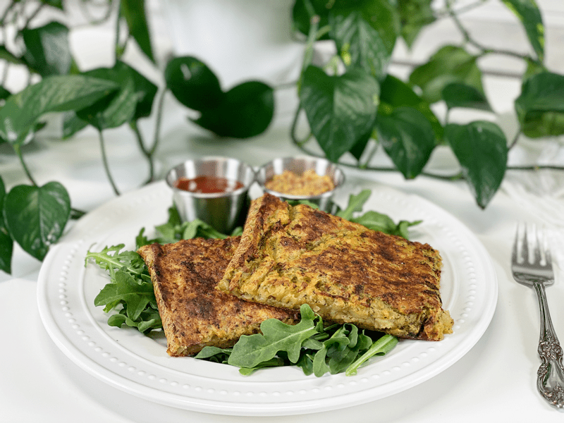
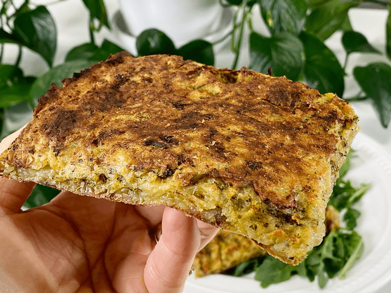
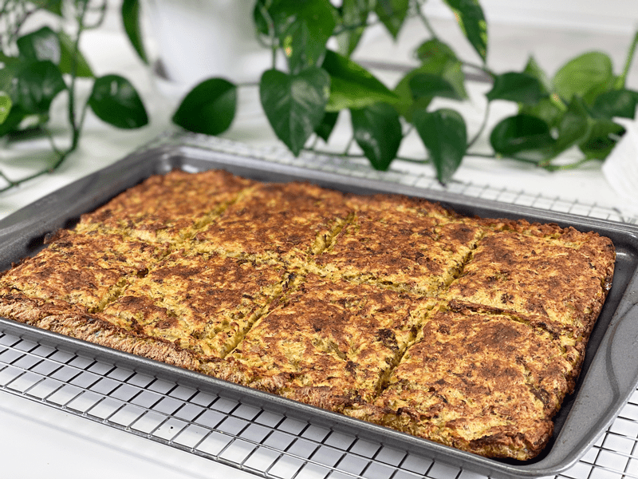
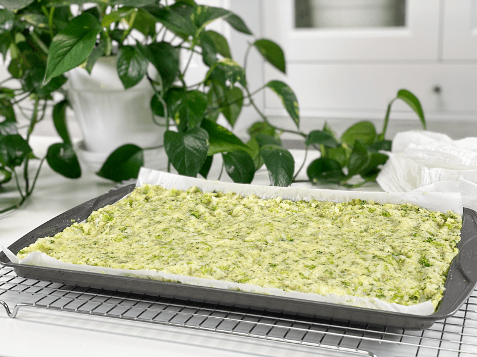
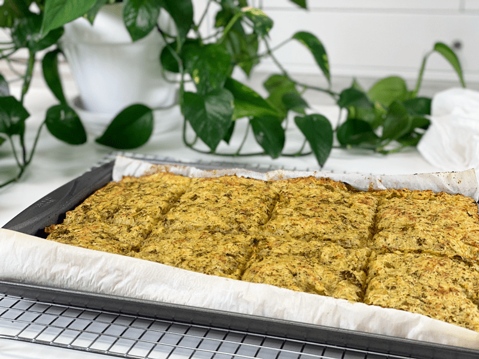
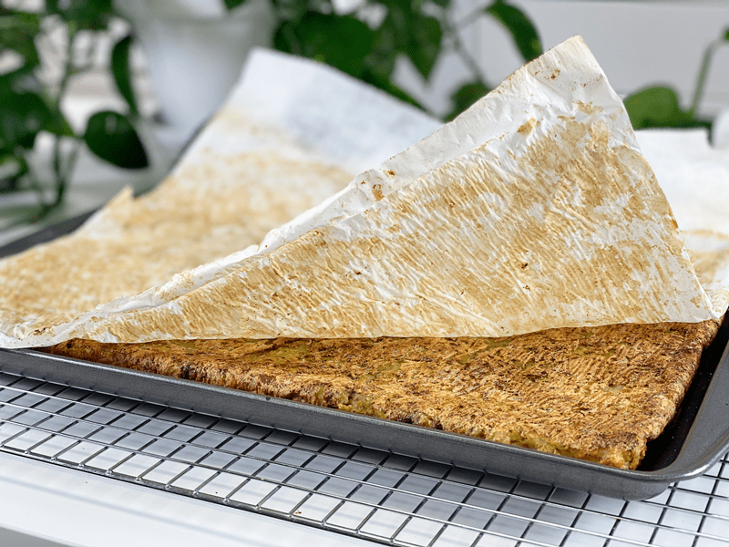
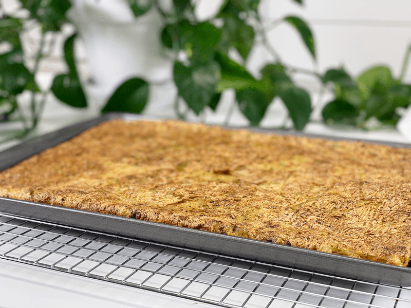
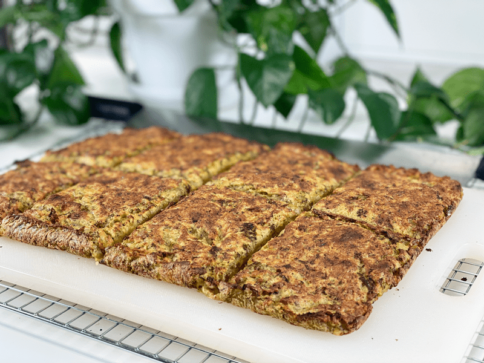

Crispy Potato and Broccoli Hash Brown Bake
This Crispy Potato and Broccoli Hash Brown Bake is golden crispy on the outside, soft and pillowy on the inside, fills the house with an Italian aroma, can be enjoyed for breakfast, lunch, or dinner, and is super easy to make! Every time I make this dish, I intend to serve it as a side dish, but we never get that far. Once it comes out of the oven, Bob and I sit down and devour it. On occasion, we will have leftovers, which are a breeze to reheat — the toaster! A savory potato pop tart!

Ever since I started making this recipe, it has become one of those dishes that I wake up craving. You know, cravings are an interesting thing. I want to quickly state that by now, my tastebuds crave only healthy foods. I don’t crave chips, cakes, Twinkies, candy bars, soda, etc. I crave grapes, fully loaded salads, brown rice, and now Crispy Potato and Broccoli Hash Brown Bake! I am so thankful that I invested in the time to retrain my taste buds so that they enjoy nutritious whole foods.

Ingredient Run-Down
Potatoes
- You can use any pre-cooked potato.
- Keep the skins on organic potatoes for added nutrients. If you are using conventionally grown potatoes, peel them to help reduce some of the pesticides.
- Use organic potatoes when at all possible. Read the importance (here).
Broccoli
- If you don’t have broccoli on hand, use fresh spinach or kale. Be sure to chop first to make it easier to blend and eat.
- You could make this recipe with just straight-up potato, but adding in some greens is a great way to sneak in greens (for picky eaters).
- If the broccoli has large, thick stalks, I would remove those before adding the broccoli to the recipe. You can save those for other dishes or recipes, or at the very least make sure they get well chopped before using so you don’t bite into tough, fibrous pieces.
Seasonings
- Feel free to adjust the seasoning to any flavors that you and your family enjoy. You can taste-test the batter after everything is mixed together and make any necessary adjustments. Everything is already cooked, so it’s safe to do that.
- The nutritional yeast adds more an umami flavor to the dish rather than a cheesy one, which is the most common reason to use it in recipes. It can be omitted, but some flavor will be lost.

Techniques and Tips
- This recipe is very forgiving, so don’t get locked into the measurements. Use any amount of pre-cooked potatoes that you may already have on hand. The same goes for the broccoli. The flavors and textures are not dependent on one another.
- For this recipe, I found it better to use cold, pre-cooked potatoes. Using freshly steamed ones created more of a mash. I batch cook potatoes at the beginning of each week so I always have some in the fridge. Plus, when you cook potatoes, allow them to chill, then cook them again, they become a resistant starch which has many benefits. You can read more about (here).
- For the broccoli, it is best to steam it first before adding it to the dish so it cooks evenly with the other ingredients.
- When shredding the potatoes, you can use a hand grater if you don’t have a food processor. Otherwise, I would stick to using the machine because it is much quicker and safer for the fingertips.
- You can make the dish as thick or thin as you want it. For a thicker slice that is soft in the middle, use a 15″x10″ baking pan with a lip. I personally wouldn’t go much thicker, unless you want to make something similar to twice-baked mashed potatoes. To make it thinner and crispier, use a larger pan, aiming for it to be no thicker than 1/4″.
 Ingredients
Ingredients
Yields 1 baking tray (15″x10″) or larger
- 3 lbs (4-5 medium) leftover steamed potatoes
- 2 cups steamed broccoli, chopped
- 1 tsp Italian seasoning
- 1 tsp onion powder
- 1/2 tsp garlic powder
- 1/4 cup nutritional yeast
- 1 tsp sea salt
Preparation
- Preheat oven to 425 degrees (F). Select the size pan you want to use and line it with parchment paper.
- Do not use wax paper, as it will stick, and I don’t recommend baking with aluminum foil due to it leaching into your foods.
- Start with steamed and cooled potatoes and broccoli.
- Using either a handheld grater or a food processor fitted with a grating disc…grate all of the potatoes so they resemble hashbrowns. Place in a large mixing bowl and set aside.
- You want to be careful that you don’t create mashed potatoes. It would still be good (should that accidentally happen) just different from what I intended for this recipe.
- If you don’t have a grater or a food processor, you can also use a potato masher or a potato ricer — aim for small chunks.
- Using a knife or a food processor fitted with the “S” blade, add the steamed broccoli and PULSE it just a few times. Add to the bowl of potatoes.
- The goal is to create smaller pieces of broccoli.
- Sprinkle the Italian seasoning, onion powder, garlic powder, nutritional yeast, and salt over the veggies. Combine everything, but be careful not to overmix, which will make it mushy.
- I prefer to use my hands instead of a spoon, to ensure that the spices get mixed in thoroughly. It’s a messy job but finger-licking good!
- Spread the batter into the baking pan, taking it all the way to the edges.
- Bake in the middle rack until crispy and cooked through; the timing will depend on how thick you make it. Flip the potato sheet over about halfway through the cooking time. It should nice and brown on the bottom before you flip it. If you want it to be extra crispy, you can broil it for a little bit. I suggest keeping a close eye on it while broiling, so it doesn’t burn.
- A 15″x10″-sized baking pan took me an hour to cook, then finished with a few minutes on broil.
- Once done baking, slide it off onto a cutting board and cut into desired shapes and sizes. Let it cool for about 5-10 minutes before eating.
- Enjoy! Store any leftovers in the fridge for roughly 3 days. You can also wrap cooled pieces in parchment paper, then slide them into a freezer-safe container and freeze for about 3 months.
- To reheat, pop into the toaster — this is Bob’s favorite way of eating them.
-

-
After mixing all the ingredients together, press it into a parchment-lined baking sheet.
-

-
After it bakes for about 15 minutes, pull it out and score into the desired sized pieces.
-

-
Once the bottom is brown (as shown in the photo) flip it over to remove the parchment paper.
-

-
Flip it back over…
-

-
Broil on high (with a watchful eye) to further crisp up the surface and edges. Let it sit for about 10 minutes before eating.
© AmieSue.com